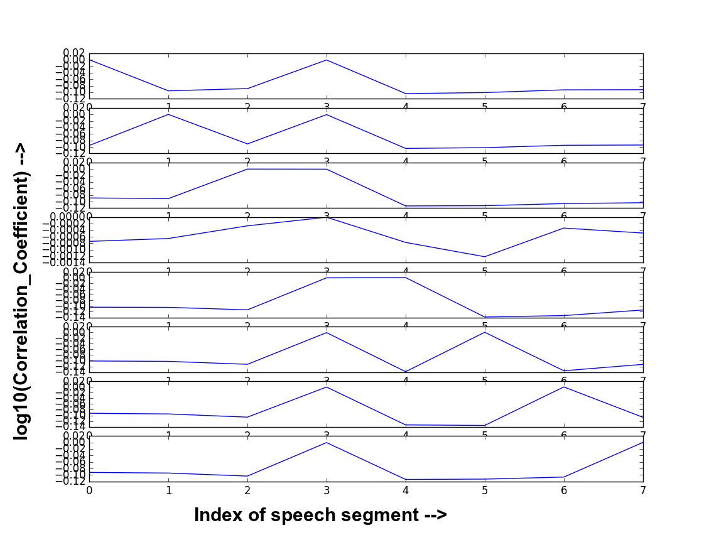
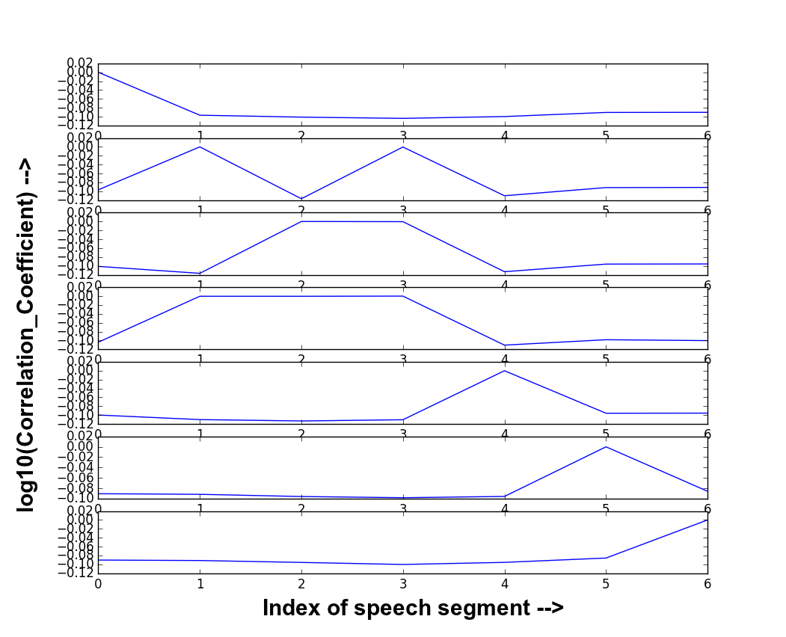
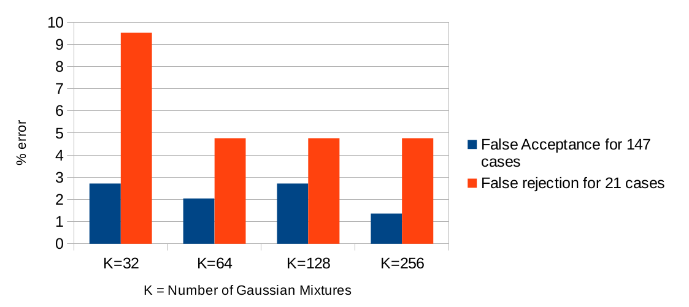

Dataset Description
As we did not find any good dataset we created our own dataset from youtube videos.
Link for the dataset
Code
Link for the code
Discussion
Why Spectogram?
1. In speaker identification system, high dimension feature set is preferred to enhance the performance. However, increased feature dimension requires more computational time and storage space. The classifier using high dimension feature set also requires more parameters to characterize a speaker model, e.g. Gaussian Mixture Model (GMM). This increases computational complexity, making real-time implementation more difficult. Furthermore, a large amount of data is required for the training.
2.An alternative approach to this is to extract effective and efficient feature vectors.Mel frequency cepstral coefficients (MFCC) and linear prediction cepstral coefficients (LPCC) are the two most common feature extraction techniques in speaker identification. MFCC is generally used because of its robustness in speaker identification. Since the elements of feature vectors are generally correlated, a large number of mixtures with full covariance matrix are necessary to provide good approximation.
3.The GMM with diagonal covariance matrix is used for both speaker identification and verification because of its computational simplicity.
4.Contextual variations in speech are better represented using a spectrogram and hence it is widely used as a tool for speech analysis
5.A spectrogram is a graphical display of the squared magnitude of the time-varying spectral characteristics of speech. It is compact and efficient in representation carrying information about energy, pitch, fundamental frequency,formants and timing. Spectrogram reading techniques have revealed that a speech spectrogram contains rich acoustic features that could be valuable in an automatic speech and speaker recognition system
6.The technique we use here formulates the speaker identification problem into pattern recognition of images and resolving it using machine learning tools. The technique uses Radon Projections of speech spectogram in different angles to derieve the speaker's voice pattern. And to get more efficient and effective speaker features we use DCT (Dicrete Cosine Transform). As our dataset was small enough we did not use the DCT in our project.
Why Radon Transform?
1. Radon transform is based on the parameterization of lines and the evaluation of integrals of an image along these lines. Due to inherent properties of Radon transform, it is a useful tool to capture the directional features of an image.
2. Basically, the Radon transform adds up the pixel intensity values in the given image (spectrogram) or time frequency distribution along a straight line in a particular direction at a specific displacement.
3. The spectrogram represents acoustic features like energy, pitch, fundamental frequency, formants and time in the form of a pattern.The Radon transform effectively captures these features in the pattern by projecting it onto different orientation slices.
4.The Radon projection is obtained by summing all the intensity values of those pixels that are within the circle surrounding the pattern to be recognized and on the line that is perpendicular to the ridge.Another advantage of using Radon transform in the proposed approach is its insensitivity to additive noise.
 Why Discrete Cosine Transform?
Why Discrete Cosine Transform?
1. DCT is an orthogonal transformation that is very widely used in image
compression and is widely accepted in the multimedia standards. DCT belongs
to a family of 16 trigonometric transformations
2.DCT is used in signal and image processing as it has a strong "energy compaction" property for highly correlated data.
3. Can use FFT like algorithms to compute them in O(nlogn) time.
Results
Voice Activity Detection
Energy spectogram of Noise and Speaker parts. We set the threshold in between the energies to filter out the silent/noisy parts.


Speech spectogram before and after applying VAD filter.

Correlation of streaks of Radon Projections

Correlation Matrix based on Radon Transform

Correlation Matrix on DCT applied on Radon Projections

The above Images show the correlation coefficient output in a 7X7 output matrix. For interpreting, note that the value of index 0 of first row is 1, since it is the correlation between itself. Similarly the Index 1 of 2nd row has correlation coefficient 1 (log10(1)=0), and so on. The index 1 of 1st row is the correlation between speech segment 1 and segment 2. Note that greater the correlation coefficient greater is the probability that the speaker is same. We can consider a thresh level of log10(0.5) and say that if the coefficient is less than this thresh, then a speaker transition has occured.
We tested this with our dataset of 7 audio samples. When evaluated, the accuracy was found was found to be less than 50%.
Comparison with MFCC
We also tried using MFCC as features. It's accuracy was found to be around 97%.

Accuracy Comparison
| MFCC |
Spectrogram with Radon Transform |
Radon Transform with DCT |
| 97% |
41% |
48% |
Team Members

Abhishek Anand
Roll No: 150102003
Branch: ECE

Bharath Rao K N
Roll No: 150102011
Branch : ECE

Rahul Kumar
Roll No: 150102054
Branch: ECE